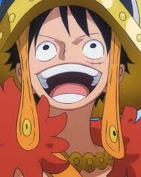
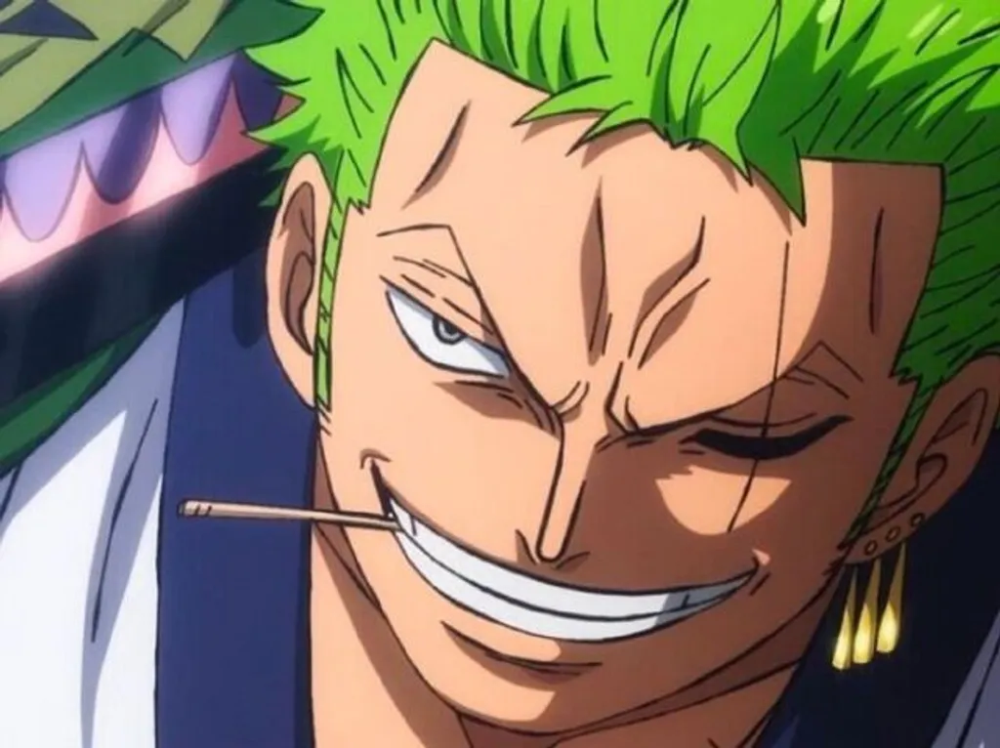
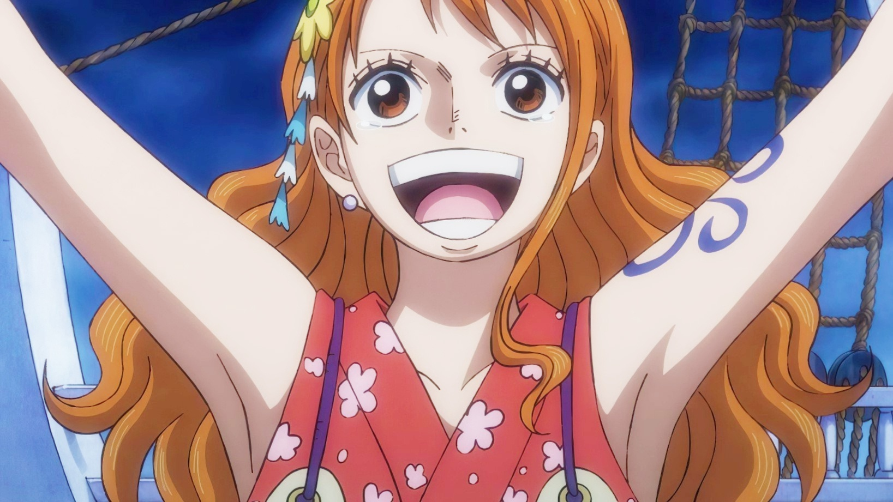
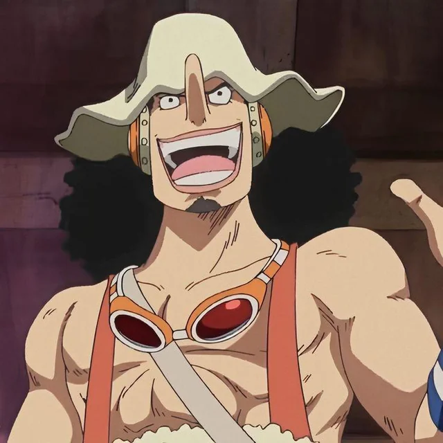
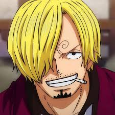
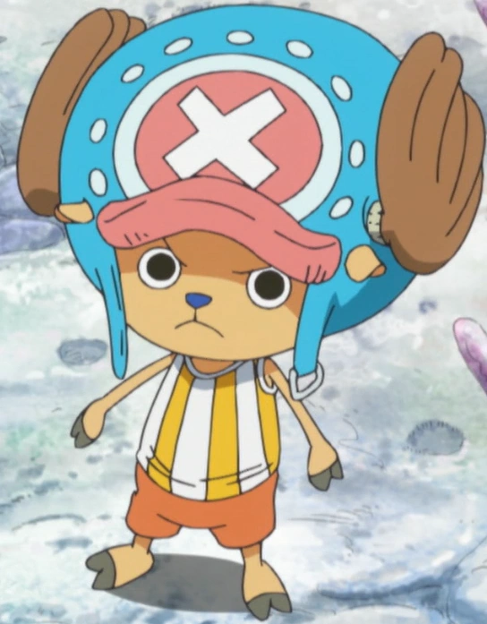
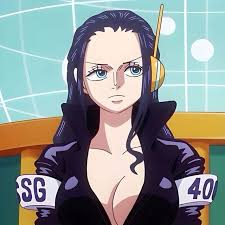
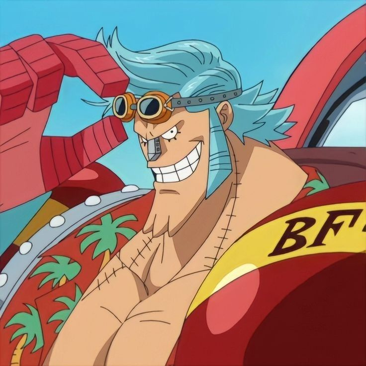
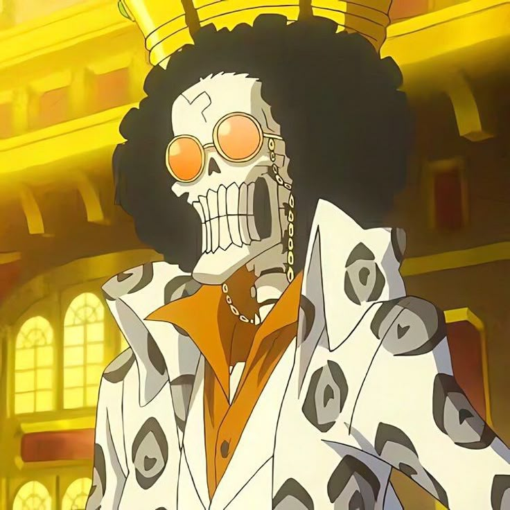
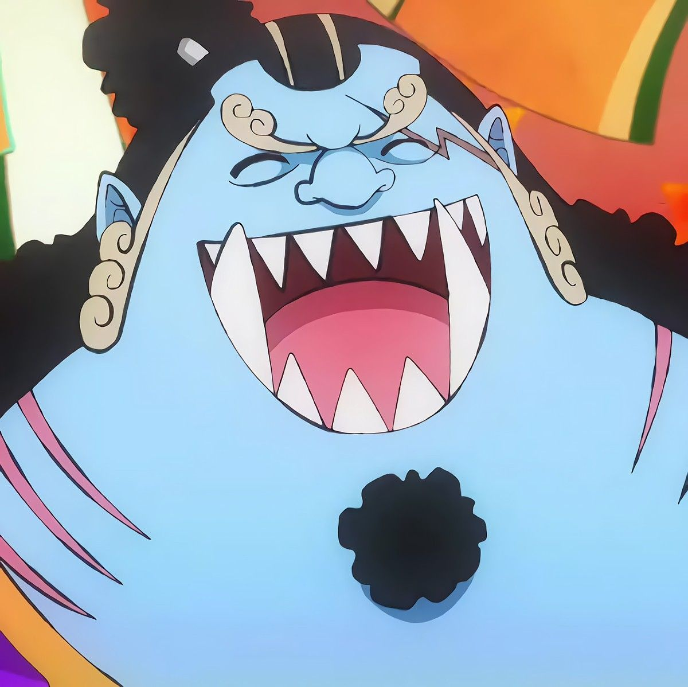

Personagens de One Piece
Quatro forças Principais
Principais Organizações de poderes no mundo de One piece

Monkey D. Luffy
O capitão da tripulação, comeu uma akuma no mi a Gomu Gomu no Mi/ Hito Hito no Mi. Ela permite que o usuário tenha o corpo de borracha. O sonho que todos conhecemos e seu desejo de se tornar o rei dos piratas

Rononoa Zoro
E o imediato da tripulação e um ex-caçador de pirata, ele luta uzando o estilo santoryu (Um estilo de luta usando três espadas). Deseja se torna o melhor espadachin do mundo

Nami
A Nami e a navegadora da tripulação e uma ex-ladra, ela luta usando um bastão Clima-Tact (criado por Usopp), capaz de manipular bolhas de ar quentes e frias para gerar raios e tempestades. Ela sonha em desenha um mapa mundi pelos locais em que ela passou

Usopp
Usopp e o atirador da tripulação, ele luta usando estilingue gigante chamado Kabuto e dispara sementes especiais, o seu sonho e se tornar um bravo gerreiro do mar

Sanji
Sanji e o cusinheiro da tripulação, ele luta usando as pernas, o seu grande sonho: encontrar o All Blue, o lendário mar que reúne a fauna marinha de todos os oceanos do mundo.

Tony Tony chopper
chopper e uma rena de nariz azul que comeu a Hito Hito no Mi (a Fruta do Humano), o que lhe deu a capacidade de falar, pensar e se transformar em um híbrido de humano e rena. Nascido na Ilha de Drum, Chopper foi acolhido pelo Dr. Hiriluk e pela Dra. Kureha, que lhe ensinaram a medicina. O seu grande sonho é se tornar um médico capaz de curar qualquer doença do mundo.

Nico Robin
Robin é a arqueóloga oficial dos Piratas do Chapéu de Palha Robin é a única pessoa viva no mundo capaz de ler os Poneglyphs (monólitos de pedra antigos). O seu grande sonho é encontrar o Rio Poneglyph e descobrir a verdadeira história do Século Perdido.

Franky, cujo nome verdadeiro é Cutty Flam, é o carpinteiro oficial dos Piratas do Chapéu de Palha em One Piece. Ele é um ciborgue modificado por si mesmo e o brilhante construtor do atual navio da tripulação, o Thousand Sunny. O grande sonho de Franky é construir um "navio dos sonhos" capaz de navegar por todo o mundo e superar qualquer perigo, acompanhando a embarcação de perto até o fim da jornada.

Brook é o músico oficial dos Piratas do Chapéu de Palha em One Piece. Ele é um esqueleto vivo que entrou para o bando após os eventos do arco de Thriller Bark. Seu sonho e reicontra uma velha companheira baleia chamada de laboon

jinbe
Jinber timoneiro oficial dos Piratas do Chapéu de Palha em One Piece, Ele é um homem-peixe. Seu sonho é cumprir o desejo de seus antigos mentores, Fisher Tiger e a Rainha Otohime: ver a igualdade real entre humanos e homens-peixe.
ilhas
| Espécie | Classe | Ataque Especial |
|---|---|---|
| nome | clima | localização |
| Cactus Island (Whisky Peak) | Little Garden | Ilha Drum |
Classes baseadas no Livro dos Dragões de Berk